Knowing OpenFOAM Versions
Two versions of OpenFOAM available - OpenFOAM Foundation and OpenFOAM ESI ,
both are used by researchers and published papers covers both of these versions.
Here's my suggestion to which one to use (according to priority):
-
Use the same version as your organisation
Recommended for code compatibility and sharing of projects.
-
Choose OpenFOAM ESI (ending with v2412)
It is a more widely used version, which means you will be likely to get help from OpenFOAM forums. There are also lots of YouTube resources that uses this version of OpenFOAM.
- All subsequent guides are using OpenFOAM ESI version
OpenFOAM ESI website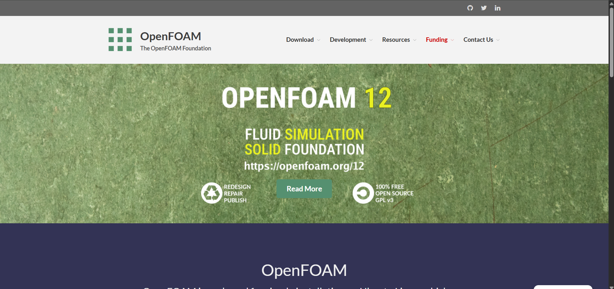OpenFOAM foundation website
Installing Ubuntu
OpenFOAM runs in a Linux environment
(An operating system as like MacOS, Windows, and Linux).
However, you can run OpenFOAM in windows
through Windows Subsystem for Linux (WSL)
which you do not need to have another
operating system in your PC.
1. Go search in task bar, and open Windows PowerShell
Can be opened by searching "Windows PowerShell" at the bottom search bar
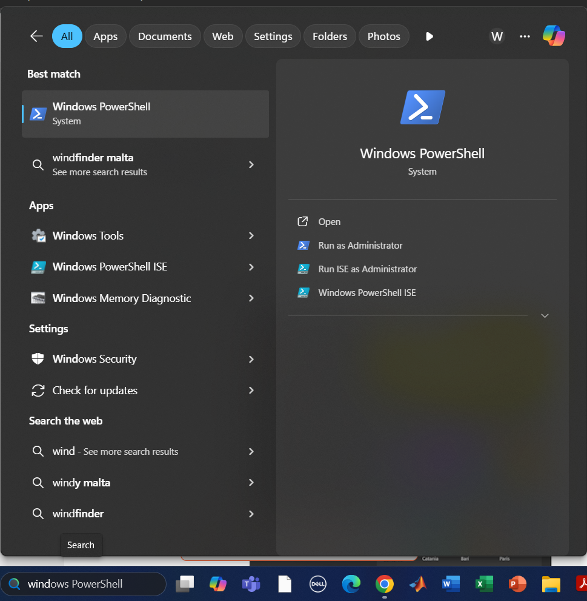
2. Type the below command and press "Enter"
wsl -l
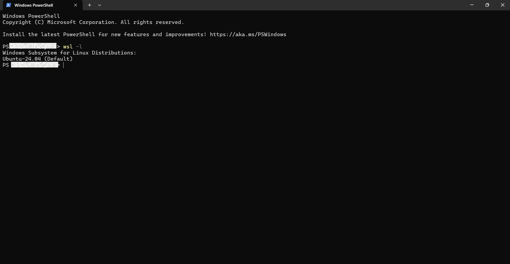
Skip this section and go to Download OpenFOAM section if there
is a Ubuntu installation exist
3. Type the below command and press "Enter"
wsl.exe --list --online
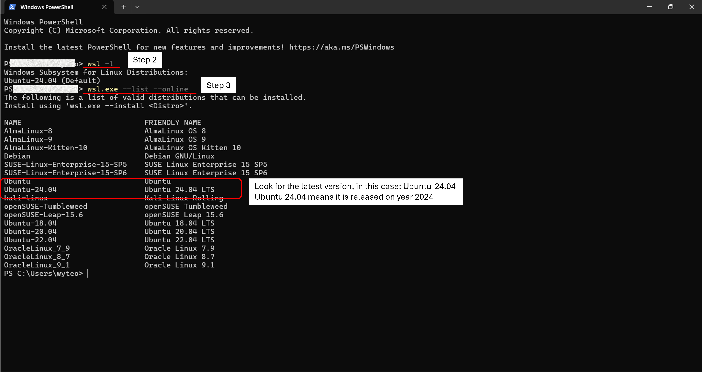
4. Type the below command and press "Enter"
wsl.exe --install Ubuntu-24.04
This is how the installation will look like.
You may skip the video, it is 3 minutes long.
5. Type below command and press "Enter"
wsl.exe -d Ubuntu-24.04
Set up your username and password.
When typing your password, you won't see any changes on the screen (No ***** will appear). It is normal, continue typing your password and press "Enter"
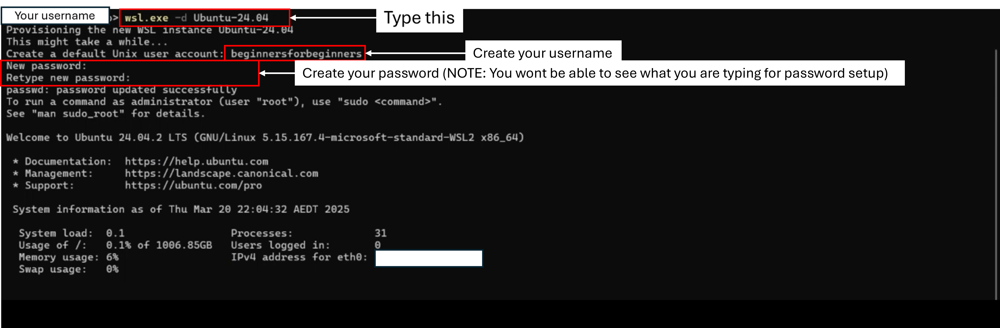
Your Ubuntu set up is successful if the following appears
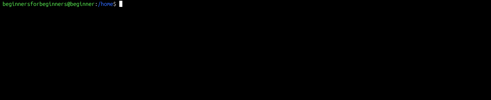
Downloading OpenFOAM
1. Using Ubuntu terminal (the application downloaded above), enter the folloing lines
curl https://dl.openfoam.com/add-debian-repo.sh | sudo bash
Enter the password set earlier. There will not be any changes when typing. (No **** symbol)
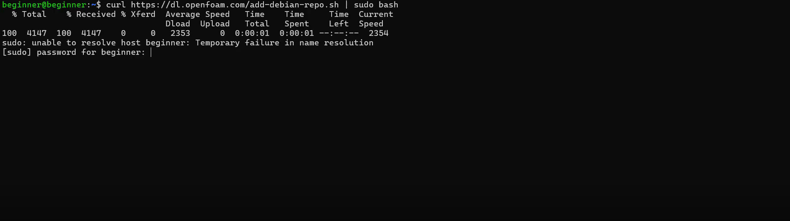
Then paste the following and press "Enter"
sudo apt-get update
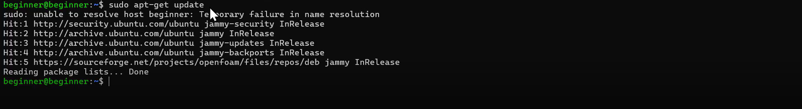
Then paste the following and press "Enter"
sudo apt-get install openfoam2412-default
Note: Do not close the Ubuntu terminal during installation.
2. Once the download is complete, you will see a screen like this, do not close the Ubuntu terminal. Copy the text in your terminal.
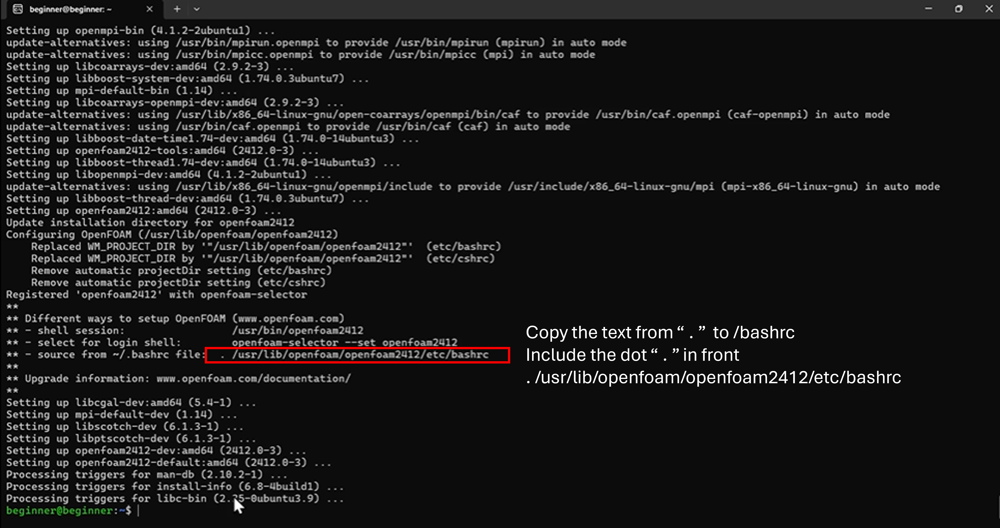
3. Open a bashrc text file by typing the following and press "Enter"
nano ~/.bashrc
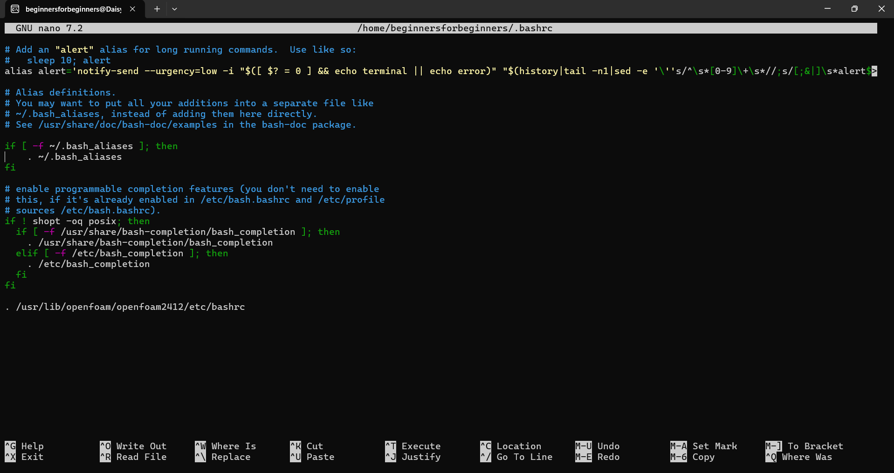
4. Paste the text that you copied in step 2 at the bottom of the bashrc text file,
save and close the text file.
Tips:
- To scroll to the bottom, press "pg dn"
- To save, press "ctrl" + "o"
- To exit, press "ctrl" + "x"
5. Type the following and press "Enter"
source ~/.bashrc
6. To test whether the installation works,
type "blockMesh" and press "Enter".
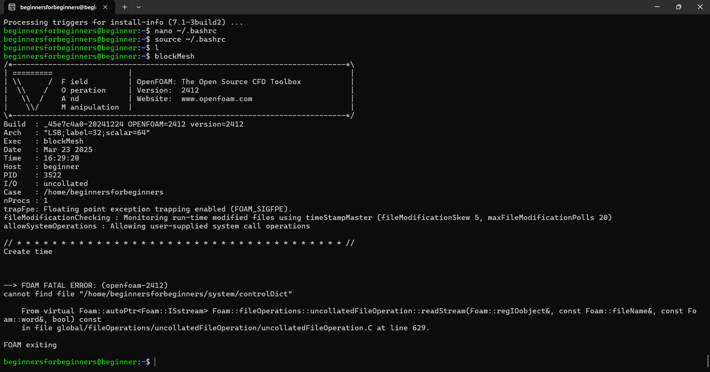
If blockMesh runs as the above screenshot, the installation is successful👏.